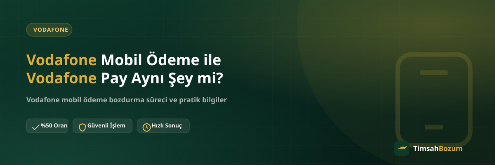

İkisinin de adında "Vodafone" geçtiği için Vodafone Mobil Ödeme ile Vodafone Pay'i aynı hizmet sanan çok kişi var. Oysa ikisi farklı amaçlarla çalışan, farklı ekranlardan yönetilen iki ayrı uygulama. Bu karışıklık özellikle bozum yapmak isteyenler için önemli, çünkü TimsahBozum'da işleme alınan bakiye ikisinden sadece biri. Bu yazıda aradaki farkı, neden karıştırıldığını ve bozum sürecinde hangi bakiyenin geçerli olduğunu netleştiriyoruz.
Vodafone Mobil Ödeme ile Vodafone Pay Arasındaki Temel Fark Nedir?
Vodafone Mobil Ödeme, hattının üzerinden yaptığın dijital içerik ve uygulama içi satın alma harcamalarının biriktiği ve faturana ya da ön ödemeli bakiyene yansıyan bir sistemdir. Vodafone Pay ise bankacılık ve kart işlemlerine yönelik ayrı bir dijital cüzdan uygulamasıdır. Yani biri hattının üzerinden, diğeri bağlı olduğun kart veya hesap üzerinden çalışır. TimsahBozum'un bozdurduğu bakiye, bu ikisinden yalnızca hat üzerinden oluşan mobil ödeme bakiyesidir.
Vodafone Mobil Ödeme Nedir?
Vodafone Mobil Ödeme, oyun içi satın alma, uygulama içi ürün veya dijital içerik gibi harcamaları hat üzerinden ödemeni sağlayan bir sistem. Kredi kartı veya banka hesabı bilgisi girmeden, sadece hat üzerinden onay vererek ödeme yapılır. Oluşan tutar faturalı hatlarda bir sonraki fatura dönemine, faturasız hatlarda ise doğrudan ana bakiyeye yansır. Bu bakiye, TimsahBozum'un bozdurduğu hizmetin konusudur.
Vodafone Pay Nedir?
Vodafone Pay, Vodafone'un sunduğu ayrı bir dijital ödeme ve cüzdan uygulamasıdır; kart bağlama, günlük ödemeler ve çeşitli finansal işlemler için kullanılır. Mobil ödeme bakiyesinden farklı olarak hat harcamasıyla değil, bağladığın kart veya hesap bilgisiyle çalışır. Güncel özellik ve kullanım koşulları için en doğru bilgiyi Vodafone'un kendi resmi kanallarından teyit etmen gerekir; TimsahBozum bu uygulamanın işleyişiyle ilgili bir hizmet sunmuyor.
İkisi Neden Karıştırılıyor?
Her iki uygulama da Vodafone markası altında sunulduğu ve isimleri birbirine çok benzediği için kullanıcılar genellikle ikisini aynı bakiye havuzu sanıyor. Oysa mobil ödeme bakiyesi hattının bir özelliğiyken, Vodafone Pay bağımsız bir ödeme aracı. Hangi ekranda hangi bakiyeyi gördüğünü bilmek, bozum işlemine doğru bilgiyle başlamanı sağlar.
İki Uygulamayı Karıştırmamak İçin Ne Yapmalısın?
Ekran görüntüsü paylaşmadan önce hangi uygulamayı açtığına dikkat etmen yeterli. Vodafone'um uygulaması içindeki mobil ödeme bakiye ekranı ile ayrı kurulu Vodafone Pay uygulamasındaki cüzdan ekranı görsel olarak da farklıdır; ikisini karıştırmamak için ekran görüntüsünü göndermeden önce üstte hangi başlığın yazdığını kontrol etmek küçük ama işe yarayan bir alışkanlıktır. Emin olamadığın bir durumda ekran görüntüsünü WhatsApp'a gönderip hangi bakiyeden bahsettiğini de yazıyla belirtmen, karşı taraf için de netlik sağlar.
Bozum İşleminde Hangisi Geçerli?
TimsahBozum yalnızca Vodafone Mobil Ödeme bakiyesini işleme alıyor. Bu bakiye, hattının üzerinden oluşan ve Vodafone mobil ödeme bozdurma hizmetimizin konusu olan tutardır. Vodafone Pay cüzdanındaki bir bakiye veya kart bakiyesi bu kapsamda değerlendirilmez.
Vodafone Pay Bakiyesi Bozdurulabilir mi?
Hayır, TimsahBozum'un sunduğu hizmet Vodafone Pay cüzdanını kapsamıyor. Karıştırmamak için işleme başlamadan önce hangi uygulamada hangi bakiyeyi gördüğünü kontrol etmen, WhatsApp'ta yanlış bilgi paylaşıp süreci uzatmanı önler.
Vodafone Mobil Ödeme Bakiyeni Nasıl Bozdurursun?
Hangi bakiyenin geçerli olduğunu netleştirdikten sonra süreç oldukça basit ilerliyor. İşte adım adım nasıl işlediği.
Hangi Bilgi Paylaşılmalı?
Vodafone'um uygulamasını açıp mobil ödeme bakiye ekranının güncel bir görüntüsünü almak yeterli. Tutarın ve tarihin net göründüğü bu ekran görüntüsü, WhatsApp hattımıza (+90 543 887 21 71) iletildiğinde işlem başlar. Bilgiyi tekrar istememize gerek kalmaması için görüntünün okunaklı olmasına dikkat et.
Kısmi Bozum Yapılabilir mi?
Evet. Mobil ödeme bakiye tabanlı bir hizmet olduğu için bakiyenin tamamını değil, istediğin bir kısmını da bozdurabilirsin. Bu yönüyle Razer Gold veya iTunes gibi kod tabanlı hizmetlerden ayrılır; kod tabanlı hizmetlerde kodun tam değeri tek seferde değerlendirilir, kısmi bozum söz konusu değildir.
İşlem Süreci Nasıl İlerler?
Ekran görüntüsünü paylaştıktan sonra güncel oranı WhatsApp üzerinden teyit ediyoruz. Oranlar zaman içinde güncellenebildiğinden sitedeki bilgi genel bir referans niteliğindedir, işlem anındaki kesin oranı sohbet üzerinden görüşürüz. Onay verdiğinde ödemen yine WhatsApp'ta görüşülen yöntemle yapılır. Süreçte üyelik, form doldurma veya kimlik belgesi istenmiyor; hattına erişim de talep edilmiyor.
SMS Doğrulama Kodu İstenir mi?
Hayır, hiçbir aşamada hattına gelen bir SMS doğrulama kodu senden istenmez. Böyle bir talep gelirse bu, bozum süreciyle ilgisi olmayan bir dolandırıcılık girişimi olabilir; bu durumda işlemi durdurup bilgi paylaşmamalısın.
Benzer Karışıklık Başka Operatörlerde de Var mı?
Evet, bu tür bir isim benzerliği yalnızca Vodafone'a özgü değil. Turkcell hattı kullanan kullanıcılar da mobil ödeme bakiyesi ile ayrı bir cüzdan uygulaması olan Paycell bakiyesini zaman zaman birbirine karıştırabiliyor. Genel kural aynı: hangi bakiyenin hangi uygulamada göründüğünü bilmek, doğru bilgiyle işleme başlamanı sağlıyor.
İşlem Hangi Saatlerde Yapılır?
TimsahBozum her gün 10:00 ile 03:00 arası aktif. Bu saatler dışında gönderdiğin mesaj kaybolmaz, hat açıldığında sırasıyla yanıtlanır. Tüm işlemler yalnızca resmi WhatsApp hattımızdan yürür; farklı bir numara veya platformdan gelen bir teklifle karşılaşırsan bilgi paylaşmadan önce resmi numaradan teyit istemen en güvenli yol.
İlgili Yazılar
- Vodafone Mobil Ödeme Bozdurma Adım Adım Nasıl Yapılır?
- Vodafone Mobil Ödeme Limitini Nasıl Öğrenirim?
- Vodafone Mobil Ödeme Bakiyesi Faturama Nasıl Yansır?
Hattındaki Vodafone Mobil Ödeme bakiyesini bozdurmak istersen, WhatsApp hattımıza yazarak sürecini hemen başlatabilirsin.